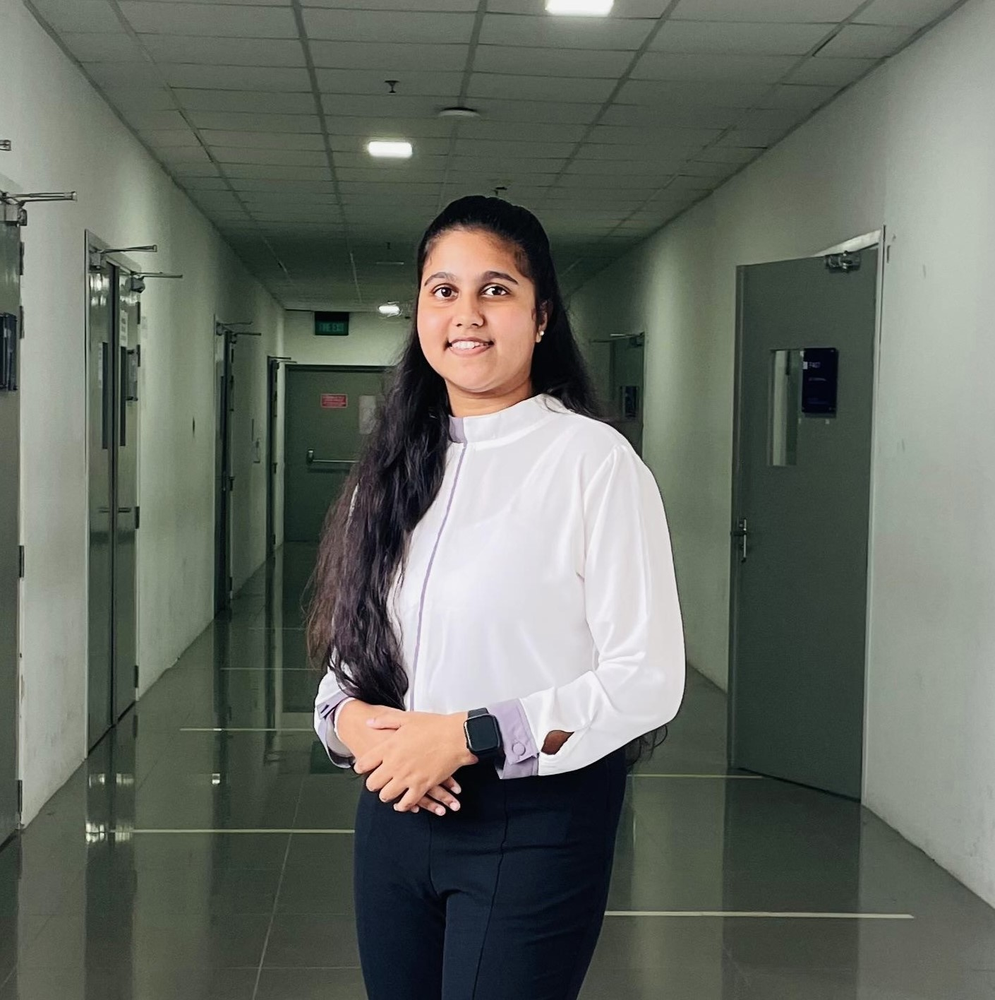

I am Duneesha Peramune an undergraduate student studying for a BSc (Hons) in Biotechnology.I am building a basis in biological sciences and research methods, focusing on how biotechnology can be applied in areas like healthcare . In addition to my studies,I have a strong passion for photography and I am learning food and product photography in my leisure time.I am a friendly, sensitive and introvert person.I hope to become a forensic scientist one day, contributing to advancements in crime solving and justice.
